Built for series production, verified before it ships.
A managed partnership, not an outsourced black box.
Series manufacturing runs through a qualified partner facility in China, audited and managed to our specification, so the path from a validated prototype to a stable production line never leaves our oversight.
Our production partner, HAIDI, builds to our drawings, our approved component list and our work instructions. Every process step is defined by WS Technicals: incoming inspection, assembly sequence, in-line testing and final release. Nothing ships without meeting the same specification that was validated in Denmark.
A dedicated engineer follows every programme from first article through to stable series output, so a deviation is caught and corrected at the source rather than at the customer's door.
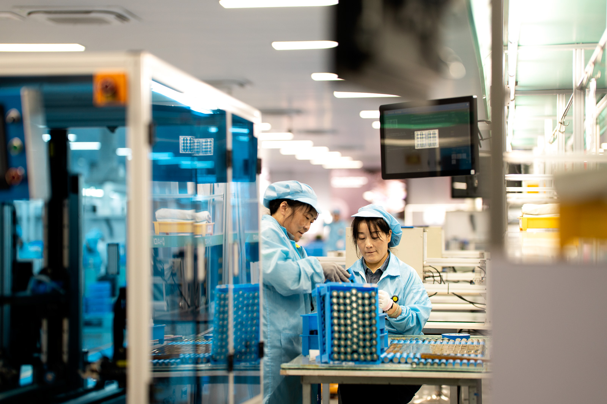
Three things every unit carries with it.
Traceability and verification are built into the production flow, not added at the end.
EOLEnd-of-line testing
Every single unit is functionally tested before it leaves the line: voltage, capacity, insulation resistance and communication with the host system. A unit that does not pass is not shipped.
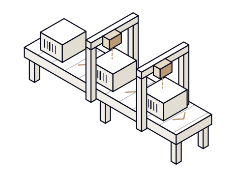
FLOWControlled production flow
A defined sequence of work instructions, component lot tracking and in-process checks, so any batch can be traced back to the components and the station that built it.
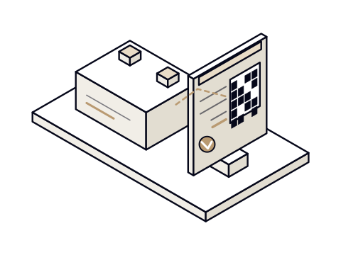
PASSPORTBattery passport ready
Production records are structured to meet the EU's upcoming digital battery passport requirements, giving every pack a documented history from cell to finished system.
Inside the production floor.
A closer look at the assembly and test process behind every pack.
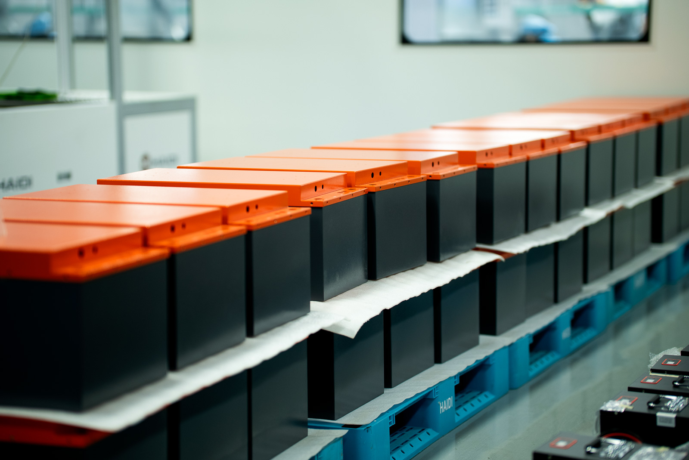
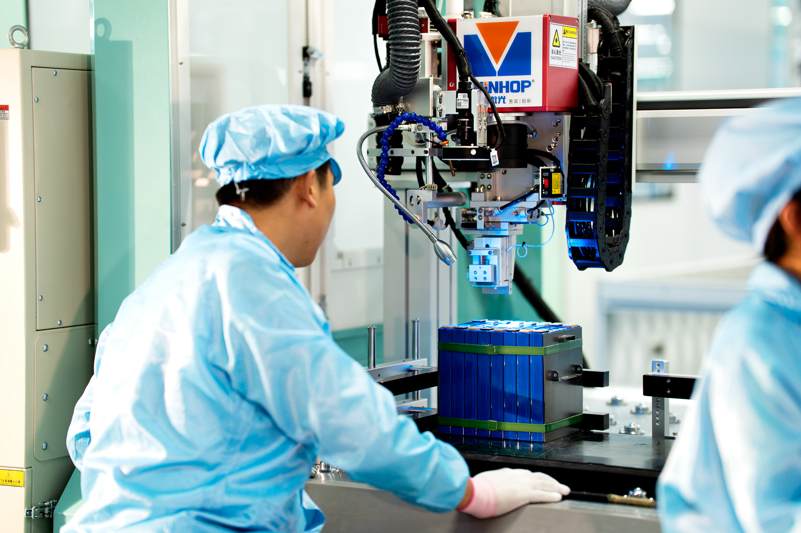
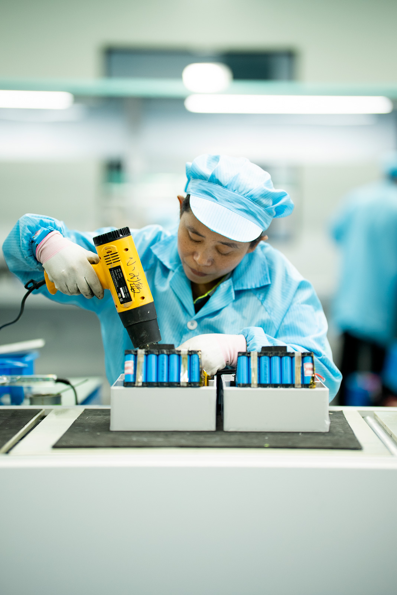
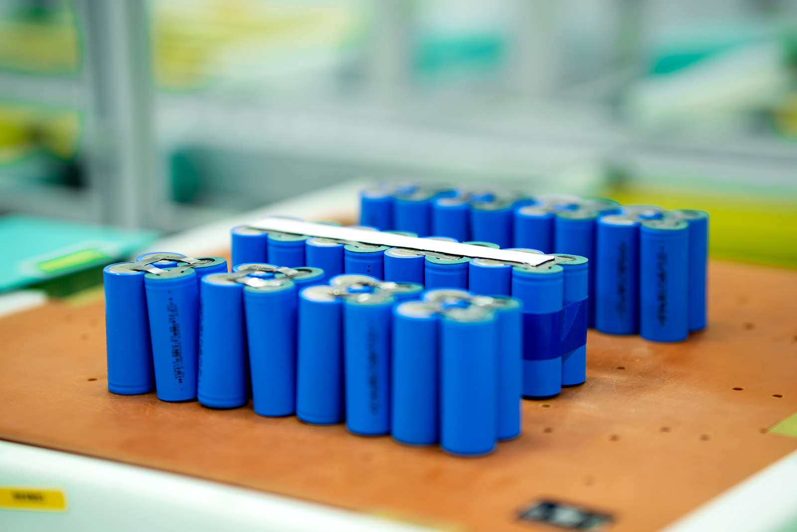
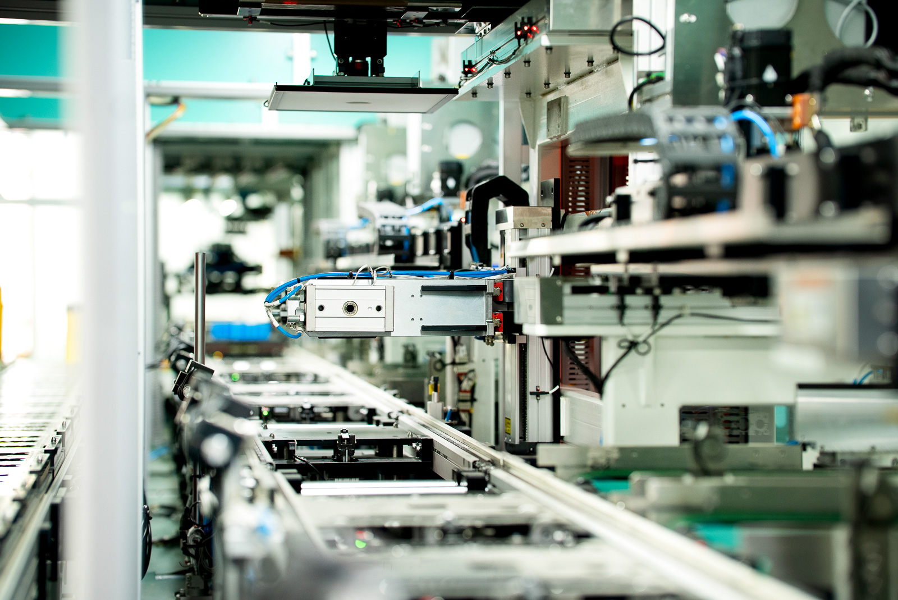
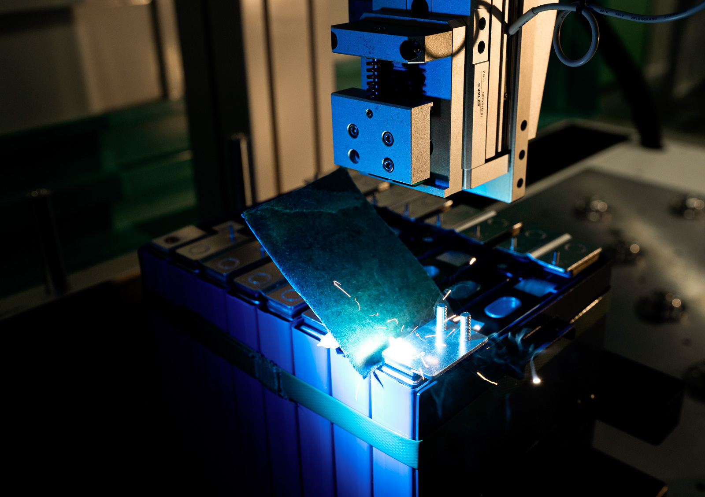
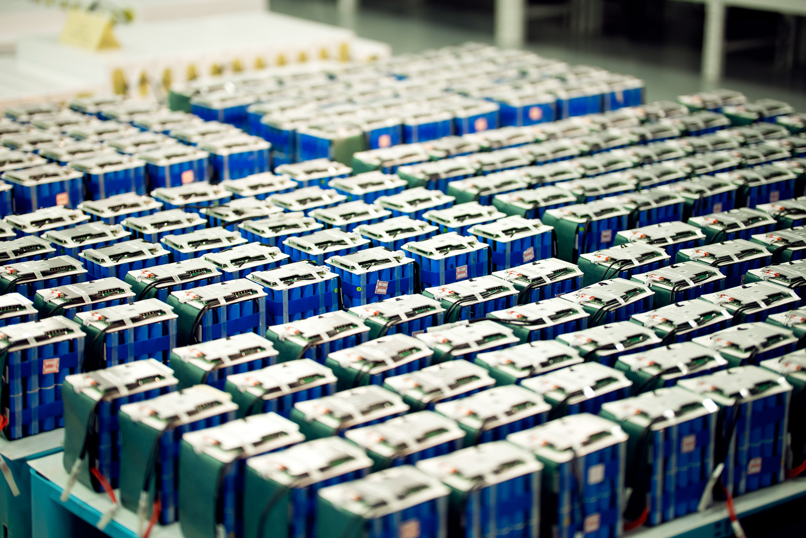
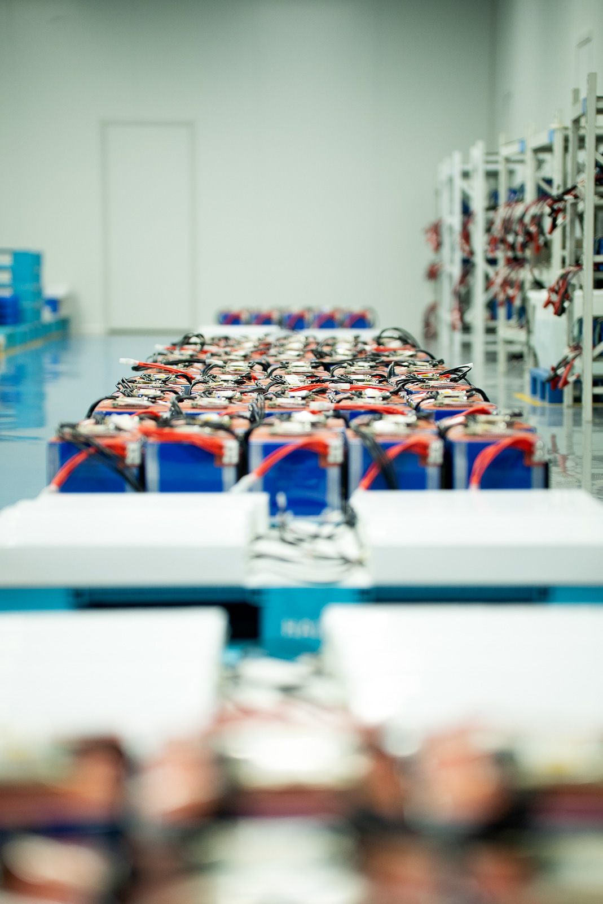
Ready to scope your production volumes?
Tell us the application, the target volume and the timeline. We will help scope the right manufacturing path, from first article to stable series output.